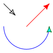

2. Arrows
First let’s work on images of size 200x200 and let us keep the default
user window which has an
\(x\)-range from -1 and 1 and an
\(y\)-range from -1 to 1.
Given a curve
c
, the form
draw-arrow
is used to draw the curve
and arrow head(s). Let’s define some curves we can turn into arrows.
Here (arc C A B)
draws a circular arc from \(A\) to \(B\) with center \(C\).
| > (draw (draw-arrow c1) | | (draw-arrow c2) | | (draw-double-arrow c3)) |
|

|
The default behavior is to draw an arrow head at the end of the curve.
Use
draw-double-arrow
to draw arrow heads at both at the beginning and end
of the curve.
The discussion below goes into detail with the shape of the default arrow head,
but let’s demonstrate that there are alternative arrow heads available.
| > (draw (draw-arrow c1 #:head arrow-head | | #:tail line-head) | | (draw-arrow c2 #:head harpoon-up | | #:tail harpoon-down) | | (draw-arrow c3 #:head hook-head | | #:tail reverse-hook-head)) |
|
|
Here “ah” is short for “arrow head”.
Several parameters affect the size and shape of the default arrow head. The most important
is
ahlength
which holds the length of the arrowhead.
|
| > (draw (my-arrow 0.04 c1) | | (my-arrow 0.08 c2) | | (my-arrow 0.16 c3)) |
|
|
The unit used by
ahlength
is user coordinates. This can at times
be inconvenient, so you can use
(px x)
to compute the size of
\(x\) pixels
expressed in user coordinates.
|
| > (draw (my-arrow (px 4) c1) | | (my-arrow (px 8) c2) | | (my-arrow (px 16) c3)) |
|
|
Now, let’s look closer at the default arrow head:
The default value for the parameter ahangle
is 45 (degrees).
Let’s try different values for the parameter
ahangle
.
And to make room for several arrow heads, we will reduce the pict size.
If you have two arrows pointing to the same point, and you feel the
overlap of the two arrow heads is too large, consider using a smaller value
for
ahangle
.
The parameter
ahflankangle
controls the “flank angle”. The default is 10 (degrees).
| > (ahangle 45) |
| > (define (head angle) | | (ahflankangle angle) | | (draw-arrow (curve (pt 0 0) -- (pt 1 0)))) |
|
| > (beside (head 5) (head 10) (head 15) (head 20) (head 25)) |
|
The parameter
ahtailcurvature
controls the “tail curvature”. The default is 2.
| > (ahflankangle 10) |
| > (define (head curvature) | | (ahtailcurvature curvature) | | (draw-arrow (curve (pt 0 0) -- (pt 1 0)))) |
|
| > (beside (head 2) (head 4) (head 8) (head 16) (head 32)) |
|
Finally, the parameter
ahratio
controls the size of the indentation
relative to the length of the arrow head. The default value is 0.9.
| > (ahtailcurvature 2) |
|
| > (beside (head 1) (head 0.9) (head 0.8) (head 0.7) (head 0.6)) |
|
We can get a boring, standard arrow head like this:
| > (ahflankangle 0) |
| > (ahtailcurvature 0) |
| > (ahratio 1) |
| > (draw-arrow (curve (pt 0 0) -- (pt 1 0))) |
|
Let’s set our parameters back to the default:
| > (ahlength (px 4)) |
| > (ahangle 45) |
| > (ahflankangle 10) |
| > (ahtailcurvature 2) |
| > (ahratio 0.89) |
| > (draw-arrow (curve (pt 0 0) -- (pt 1 0))) |
|
The parameters are convenient to use to set the appearance of all arrows in a figure.
If you need special values for a few arrows, then pass the settings as keyword arguments.
| > (draw (draw-arrow c1 #:length (px 8)) | | (draw-arrow c2 #:length-ratio 1) | | (draw-double-arrow c3 #:head-angle 30)) |
|
|
Apropos options, let’s play with colors and filling of the arrow heads.
| > (ahlength (px 8)) |
| > (draw (draw-arrow c1 #:color "red") | | (draw-arrow c2 #:fill-head #f) | | (draw-arrow c3 | | #:stem-color "blue" | | #:head-color "cyan" | | #:head-outline-color "darkgreen")) |
|
 |